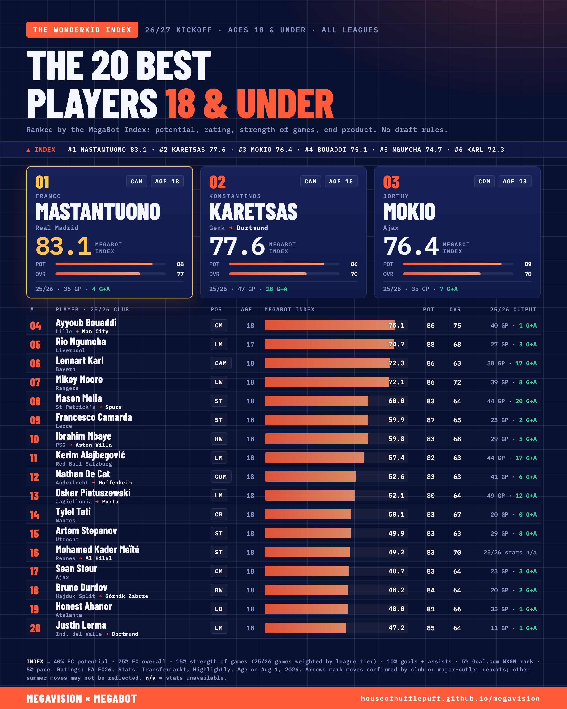

The 20 best players in the world aged 18 or under at the start of 26/27, every league, no draft rules. Save the image (right-click or long-press) and post it.
| # | Player | 25/26 club | Age | Pos | Index | Pot/Ovr | GP / G / A |
|---|---|---|---|---|---|---|---|
| 1 | Franco Mastantuono | Real Madrid | 18 | CAM | 83.1 | 88/77 | 35 / 3 / 1 |
| 2 | Konstantinos Karetsas | Genk → Dortmund | 18 | CAM | 77.6 | 86/70 | 47 / 2 / 16 |
| 3 | Jorthy Mokio | Ajax | 18 | CDM | 76.4 | 89/70 | 35 / 4 / 3 |
| 4 | Ayyoub Bouaddi | Lille → Man City | 18 | CM | 75.1 | 86/75 | 40 / 0 / 1 |
| 5 | Rio Ngumoha | Liverpool | 17 | LM | 74.7 | 88/68 | 27 / 2 / 1 |
| 6 | Lennart Karl | Bayern | 18 | CAM | 72.3 | 86/63 | 38 / 9 / 8 |
| 7 | Mikey Moore | Rangers | 18 | LW | 72.1 | 86/72 | 39 / 6 / 2 |
| 8 | Mason Melia | St Patrick's → Spurs | 18 | ST | 60.0 | 83/64 | 44 / 15 / 5 |
| 9 | Francesco Camarda | Lecce | 18 | ST | 59.9 | 87/65 | 23 / 1 / 1 |
| 10 | Ibrahim Mbaye | PSG → Aston Villa | 18 | RW | 59.8 | 83/68 | 29 / 3 / 2 |
| 11 | Kerim Alajbegović | Red Bull Salzburg | 18 | LM | 57.4 | 82/63 | 44 / 13 / 4 |
| 12 | Nathan De Cat | Anderlecht → Hoffenheim | 18 | CDM | 52.6 | 83/63 | 41 / 2 / 4 |
| 13 | Oskar Pietuszewski | Jagiellonia → Porto | 18 | LM | 52.1 | 80/64 | 49 / 6 / 6 |
| 14 | Tylel Tati | Nantes | 18 | CB | 50.1 | 83/67 | 20 / 0 / 0 |
| 15 | Artem Stepanov | Utrecht | 18 | ST | 49.9 | 83/63 | 29 / 6 / 2 |
| 16 | Mohamed Kader Meïté | Rennes → Al Hilal | 18 | ST | 49.2 | 83/70 | n/a |
| 17 | Sean Steur | Ajax | 18 | CM | 48.7 | 83/64 | 23 / 1 / 2 |
| 18 | Bruno Durdov | Hajduk Split → Górnik Zabrze | 18 | RW | 48.2 | 84/64 | 20 / 1 / 1 |
| 19 | Honest Ahanor | Atalanta | 18 | LB | 48.0 | 81/66 | 35 / 1 / 0 |
| 20 | Justin Lerma | Ind. del Valle → Dortmund | 18 | LM | 47.2 | 85/64 | 11 / 0 / 1 |
| # | Player | 25/26 club | Age | Pos | Index | Pot/Ovr | GP / G / A |
|---|---|---|---|---|---|---|---|
| 21 | Maxloren Castro | Sporting Cristal | 18 | LW | 46.7 | 81/68 | 38 / 2 / 5 |
| 22 | Semm Renders | Royal Antwerp | 18 | RB | 43.2 | 84/62 | 12 / 0 / 0 |
| 23 | Chidozie Obi-Martin | Man United | 18 | ST | 43.1 | 84/65 | 0 / 0 / 0 |
| 24 | Christian Comotto | Spezia Calcio | 18 | CM | 43.0 | 83/61 | 30 / 0 / 1 |
| 25 | Aaron Bouwman | Ajax | 18 | CB | 42.8 | 83/65 | 12 / 1 / 0 |
| 26 | Louis Page | Leicester City | 18 | CM | 42.5 | 83/61 | 21 / 0 / 1 |
| 27 | Francisco Cortés Gracia | Levante UD | 18 | LW | 42.4 | 81/64 | 22 / 3 / 0 |
| 28 | Mateus Mané | Wolverhampton Wanderers | 18 | RW | 42.3 | 79/60 | 30 / 3 / 2 |
| 29 | Rafael Pinto Pedrosa | Karlsruher SC | 18 | RB | 40.7 | 80/64 | 30 / 1 / 2 |
| 30 | Antonio Fernández Casino | Barcelona | 18 | RW | 40.2 | 83/64 | 1 / 0 / 0 |